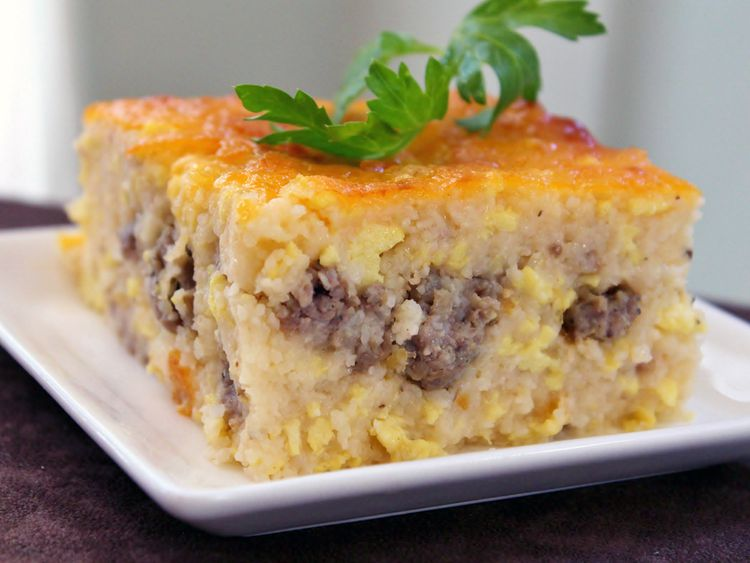

Southern Grits Casserole

Description
Grits casserole with ground sausage and cheese. Delicous southern hosipitality meal.
Below you will find a list of ingredients and a easy to follow step-by-step instructions.
Ingredients
- 6 cups water
- 2 cups uncooked grits
- 3 cups shredded Cheddar cheese
- 1/2 cup butter, cut into pieces
- 1 pound ground pork sausage
- 12 large eggs
- 1/2 cup milk
- salt and pepper to taste
Directions
- Preheat oven to 350 degree F and lightly grease a large baking dish.
- Bring water to a boil in a large saucepan; stir in grits. Reduce heat, cover, and simmer until liquid has been absorbed, roughly 5 minutes. Mix in 2 cups of Cheddar cheese and 1/2 of the butter until melted.
- Cook sausage in a skillet over medium-high heat until browned and crumbly, 5 to 7 minutes. Drain and add to grits mixture.
- Whisk eggs and milk together in a bowl. Pour into the skillet used to cook the susage. Lightly scramble eggs over medium-low heat, then mix into grits mixture.
- Pour grits mixture into the prepared baking dish. Dot with remaining butter, sprinkle with remaining 1 cup Cheddar, and season with salt and pepper.
- Bake in the preheated oven until lightly browned, about 30 minutes.